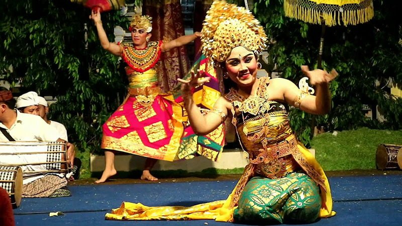

Tari Oleg
Tari Oleg Tamulilingan atau Tari Oleg Tambulilingan adalah suatu bentuk tari Bali. Sebuah tarian cinta kasih yang bertutur tentang sepasang kumbang (jantan dan betina) yang sedang menjalin asmara di sebuah taman bunga.
Tari ini terlahir pada tahun 1952 sebagai buah karya dan inovasi seorang I Ketut Marya. Bersama Tari Kebyar Duduk yang juga lahir dari pencipta yang sama, Oleg Tamulilingan menjadi tonggak dan pelopor genre seni pertunjukan yang kini disebut seni kebyar.
Istilah Oleg Tamulilingan sendiri berasal dari dua kata dalam bahasa Bali, oleg berarti goyang dan tamulilingan yang berarti kumbang. Sebuah tari berpasangan yang diperagakan oleh penari laki-laki dan perempuan sebagai kumbang jantan dan betina.
Mereka tampil mensinergikan wiraga-wirama-wirasa dengan aura dan gairah berbinar. Mencoba mengunggah suasana sebuah taman sebagai tempat lebah (kumbang) berdengung mengumpulkan nektar bunga-bunga.
Sebagai kumbang jantan, penari laki-laki bermain sangat obsesif mengejar betina dari bunga yang satu ke bunga lainnya. Meski pada awalnya sang kumbang betina cenderung menggoda, namun pada akhirnya pasrah akan rayuan dan jatuh cinta.
Dalam hal ini, gerakan penari perempuan terlihat lebih kompleks daripada penari laki-laki. Saking menariknya tarian ini, hingga dikatakan sebagai karya seni pertunjukan monumental yang belum tertandingi hingga saat ini.
Tari Oleg Tamulilingan adalah sebuah karya seni yang selalu dikagumi oleh masyarakat Bali, terutama bagi masyarakat Tabanan. Tari ini beserta penciptanya, I Ketut Marya menjadi salah satu ikon daerah tersebut.
Bahkan patung Oleg Tamulilingan dipajang di depan Gedung Mario. Gedung tersebut adalah arena berkesenian di Kabupaten Tabanan yang namanya diabadikan dari nama Marya yang oleh orang barat lebih dikenal sebagai Mario.
<< Kembali